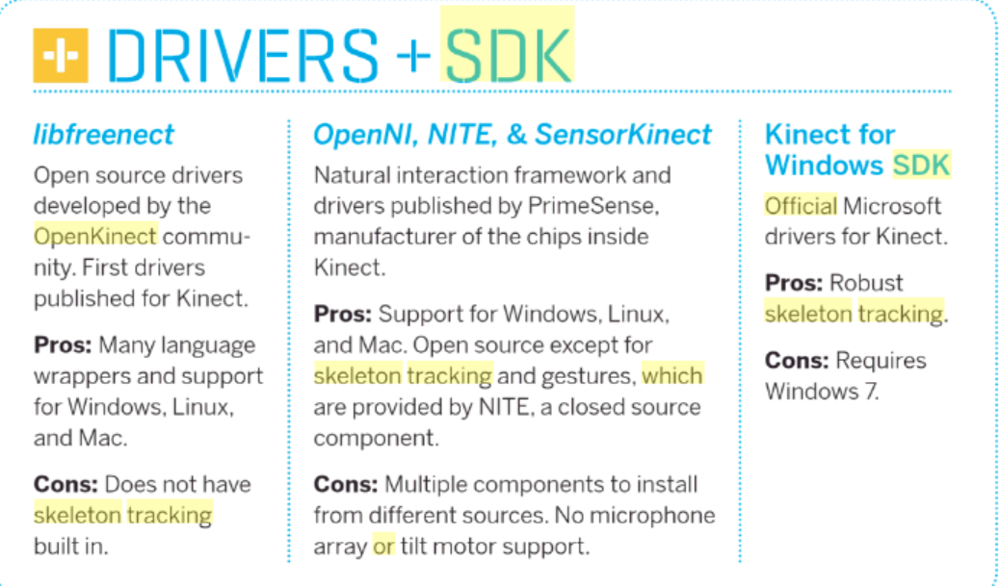

Process
Recap from Sprint I
November 10th
Our accomplishments for Sprint I were to create the upper half of Manny that would respond to given dummy movement data that substitutes motion tracking data from a Kinect .

We decided to start off our first meeting by recalling our positives and changes that we want to make after Sprint One.
Our future goals involve blogging and documenting, ordering the Kinect and more team bonding. Some positive factors that came up are that we have a good team dynamic, efficient meetings, an awesome project idea and a clear understanding of project goals.
Kinect? Or nah
October 30th
For today’s meeting we were able to borrow a kinect so the software team focused on becoming familiar with integrating the rasperry pi and kinect while the mechanical team investigated the types of materials for the Sprint II Manny.
The software team’s goal was to connect the rasberry pi to the kinect so that it would be able to skeleton track. We realized that the the skeleton tracking platform used to integrate skeleton tracking through the rasperry pi and kinect were either outdated or impossible. OpenNi, NITE & SensorKinect was bought by Apple and the data/relevant research is no longer accessible. The second option is Windows SDK which is not supported by rasperry pi. Libreekinect is the most commonly used, but it does not support skeleton tracking.

Upper Body
- Grip Spring - McMaster Carr (ASK)
- Spring Pin - POE room
- Links - Sheet Metal (ASK)
- Fishing Line - DesNat Studios
- Disks - 3D Print
- Disks - 3D Print
Lower Body
- Disney Sparky Robot http://robotics.usc.edu/~raul/pictures.htm
- Also shoutout to Antonio for the the chocolate and walnuts!!
Happy Halloween
October 31st
The software team decided to use OpenNi2 + NITE2(middleware) for skeleton tracking. We found two different types of links that we can use to implement. One thing to keep in mind is that apple did aquire openni a few years ago, so the data is a little old but we do have three different options to choose from in case one does not work. Below are two links to show how to download OpenNi2 + NITE2, three different implementation codes for OpenNi2 + NITE2 and a youtube video showing the program running.
Instructions for Downloading OpenNi, all the necessary libraries and how to use them on Raspberry Pi:
- http://www.etti.tuiasi.ro/cin/Courses/SistEmbedded/Projects/Linux/BeagleBoard/Kinect_on_Ubuntu/Kinect_on_Ubuntu.html
- https://www.icyphy.org/accessors/wiki/ROS/InstallingThePrimeSenseKinectSensorOnUbuntu?from=Main.InstallingThePrimeSenseKinectSensorOnUbuntu
- NITE 2.2 Download link: https://bitbucket.org/kaorun55/openni-2.2/src/2f54272802bf/NITE%202.2%20%CE%B1/?at=master
- OpenNI Gitub Link: https://github.com/severin-lemaignan/openni-python
- OpenNi + Nite2 Python Binding: https://pypi.python.org/pypi/primesense/2.2.0.30-3#downloads
- Youtube Video: https://www.youtube.com/watch?v=tcnhcoYUDPQ
Software teams goal today is to connect the raspberry pi and kinect to see how well the software will run.The Mechanical team is updating their solidworks to the most updated version because they are currently unable to share parts. They also divided the work within the team between the top half and bottom half. They also had a conversation with the professors to talk about the logistics of the initialization of the joints going forward. Also shoutout to Chloe for looking stellar in her Poseidon costume!!
New Month, New Goals
November 3rd
After receiving our Sprint One reviews we decided to make changes accordingly. For our first Sprint we only used a Raspberry Pi while we have to incorporate a microcontroller into our project. For the software team, our goals for today were to connect the 8 servos (voltage and code) to the Arduino and to get the skeleton tracking on our kinect.
Success!! For the mechanical team, they have figured out the basic ideas for the arm motion and have 3D printed out some parts. Today’s goal is to figure out more of the base and legs and what slots they need for the legs to move. Overall, a great day for Manny the Man.
Making Progress...
November 6th
The mechanical team has been working on their respective halves of their body, during this meeting they are discussing the combination of the upper and lower body. Antonio has made the first prototype using the 3D printer and fishing wire. They are also waiting for things to print/ laser cut which will be accomplished by next task. Overall, great job mechanical team!

Antonio with the first prototype of the arm!
The software team has been working on running the 8 servo motors and finding a way to run kinect on the Raspberry Pi. There was a setback with the power cord because it needs to have (10 Amps) but it only has (2 Amps) so it was only able to run 4 motors. The other power cord will arrive before the next meeting which will allow the software team to start troubleshooting. Shout out to Allison for bringing the delicious trail mix/ candy corn!!
Recap from Sprint II
November 13th
We had a team bonding event on Sunday that consisted of our performance in Sprint II and also a photoshoot. Even though we did not fulfill the MVP, we were able to keep our cool and are making changes for Sprint III. Pictured below is our team in front of the Babson Globe!
For this meeting we created a timeline that emphasizes on integration so that we will not be backloading our work once again.
For today’s meeting the software team will continue to work on the integration of kinect on the raspberry pi while the mechanical team will be completing the front half/bottom half of the structure. We will also be indulging in JP licks ice cream after the meeting today.
Gettin Ready
November 7th
Getting ready for the Sprint. Our goals for today are a continuation of yesterday’s goals. The software team is making progress on the servos and will meet again on Wednesday to complete it. The mechanical team has made the smaller version, in preparation of the Sprint. Here are some photos of the parts:
Stickin to the timeline
November 14th
For today’s goals, we were focused on sticking to the timeline. Mechanical’s goal was to finish Manny while the Software team’s goal was to finish the integration. For the mechanical team Antonio finished assembling the top half of Manny! Chloe is having issues with 3D printing the bottom half, but festina lente. For software, Seugin finished the interface portion for the kinect. Grace and Allison were working on how to transfer the data from the kinect to the arduino.
Meeting before Thanksgiving Break!!
November 17th
With today being the final push before Thanksgiving break our team is hard at work. Chloe is working on the complete redesign of Manny. Antonio is working on fixing the base and adding an external piece so that the support does not get in the way of the leg joints. The software is researching the different way to use the kinect on another type of board because the raspberry pi will not be able to support the kinect skeleton tracking software. I (Grace) will be working on trying to convert wordpress into a static website without upgrading to a higher service. We all have a lot to be thankful for and are excited to go on thanksgiving break!
Going up with Upboard
November 28th
We have a busy week ahead of us with our third sprint on Friday. We did our meeting checkups and everyone is eager to work and progress with the stuff we need to do on our timeline. The mechanical team is working on the final production of Manny while our software team is working on installing Arduio on the Upboard. We are still debating on whether we will be using the new mechanical structure for this Sprint. The Upboard is a very great alternative with almost no lag, it is a good day.
Seugin and Allison in awe with the Upboard.
Big Day Before Sprint III
November 30th
We have integrated the servos and the final production of Manny but unfortunately Manny seems to be uncalibrated. This was strange to us because the servos seemed to be working great before break. We made the mistake of assuming that things will work on a larger scale. The servos worked on one side but when we attached the other side, the calibration did not transfer. Next time we will need to integrate more frequently.
Final Stretch
December 4th
We have a week before the final product, we have created a timeline but the issue is that a lot of dependent pieces are in the process of being created. Today we will be choosing another theme for the blog. We will also start working on the website and dividing the different pages. We have reflected and realized that we are truly learning the struggles of integration.
Kaizen:Positives [+]
- Good place to have stopped working
- We have a good balance
- Got the kinect working on the Upboard
- Made a good level of team health
- We got full sensor for a full system
- Everyone worked hard
Negatives [-]
Kaizen: Small integration and communication